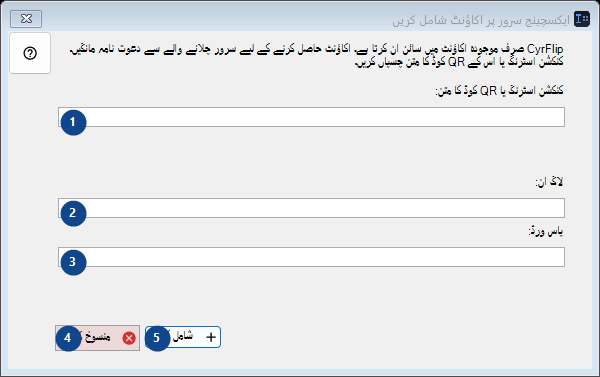
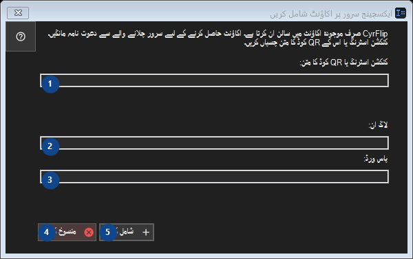

ایکسچینج سرور پر اکاؤنٹ شامل کریں
مقصد
جو کچھ کاپی کیا ہو اسے اپنے ذاتی ایکسچینج سرور کے ذریعے اپنے دوسرے آلات تک پہنچائیں۔


استعمال کی ترتیب
نمبر وار وضاحتیں پڑھیں، مطلوبہ اقدار منتخب کریں اور ونڈو کے حکم سے آگے بڑھیں۔
عناصر
1. CyrFlip صرف موجودہ اکاؤنٹ میں سائن ان کرتا ہے۔ اکاؤنٹ حاصل کرنے کے لیے سرور چلانے والے سے دعوت نامہ مانگیں۔ کنکشن اسٹرنگ یا اس کے QR کوڈ کا متن چسپاں کریں۔
ساتھ کے لیبل کے مطابق قدر منتخب یا درج کریں۔ آگے بڑھنے سے پہلے جانچیں۔
آپ کے شارٹ کٹ2. CyrFlip صرف موجودہ اکاؤنٹ میں سائن ان کرتا ہے۔ اکاؤنٹ حاصل کرنے کے لیے سرور چلانے والے سے دعوت نامہ مانگیں۔ کنکشن اسٹرنگ یا اس کے QR کوڈ کا متن چسپاں کریں۔
ساتھ کے لیبل کے مطابق قدر منتخب یا درج کریں۔ آگے بڑھنے سے پہلے جانچیں۔
آپ کے شارٹ کٹ3. CyrFlip صرف موجودہ اکاؤنٹ میں سائن ان کرتا ہے۔ اکاؤنٹ حاصل کرنے کے لیے سرور چلانے والے سے دعوت نامہ مانگیں۔ کنکشن اسٹرنگ یا اس کے QR کوڈ کا متن چسپاں کریں۔
ساتھ کے لیبل کے مطابق قدر منتخب یا درج کریں۔ آگے بڑھنے سے پہلے جانچیں۔
آپ کے شارٹ کٹ4. منسوخ کریں
درج شدہ کارروائی کے لیے یہ حکم استعمال کریں۔ قبول کرنے سے پہلے تصدیق پڑھیں۔
آپ کے شارٹ کٹ5. شامل کریں
درج شدہ کارروائی کے لیے یہ حکم استعمال کریں۔ قبول کرنے سے پہلے تصدیق پڑھیں۔
آپ کے شارٹ کٹ